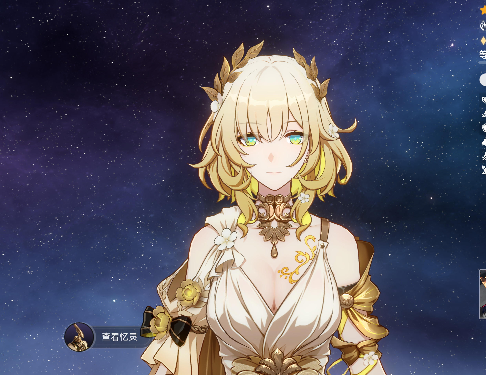

THREE.JS / WEBGL 2眼部调试 ↗
AMPHOREUS · 黄金裔
AGLAEA
阿格莱雅
「黄金的织者」
✧ ✧
以金线织就命运，
让光影停驻于此。
RENDER STUDY / 01
原始骨骼 · 分区卡通光照
冷暖 Ramp · 实时动画
IN-GAME REFERENCE

原版游戏截图 · 可与实时模型对照
◇金线正在交织载入角色与材质…
FACE / EYE STUDY固定帧 0返回展示 ↗
默认固定待机第 0 帧。拖动可检查侧面；截图只包含画布，便于同帧对比。